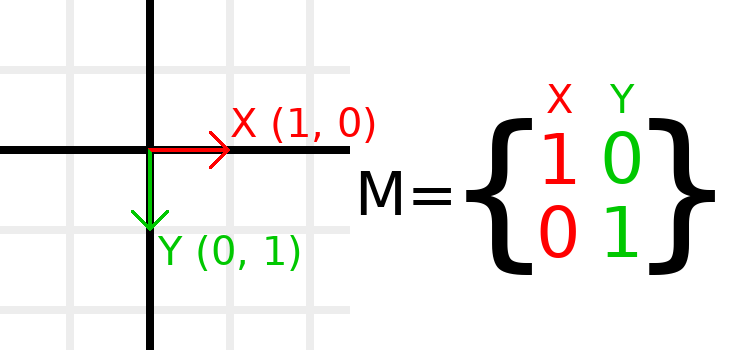
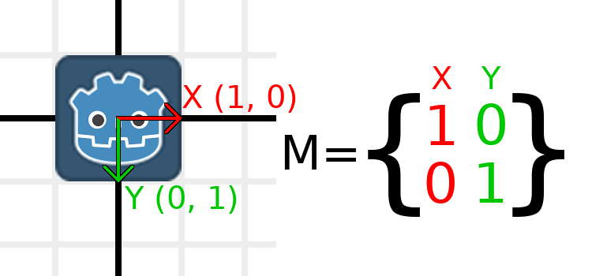
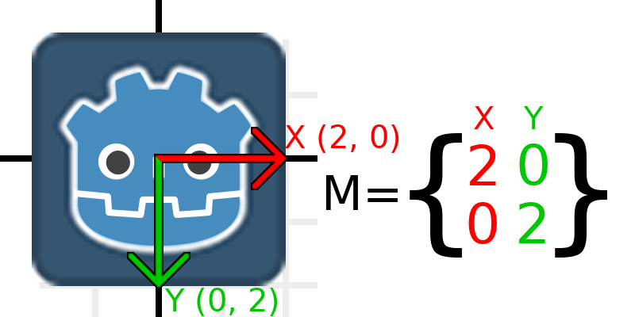
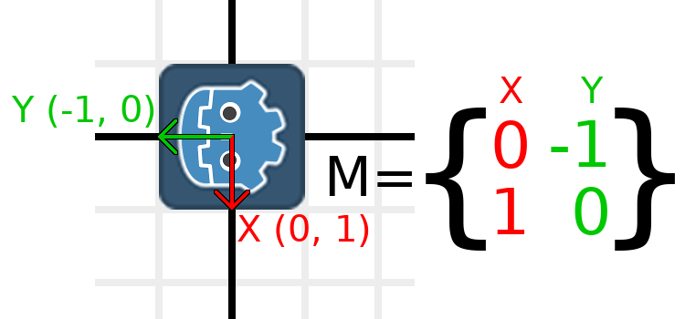
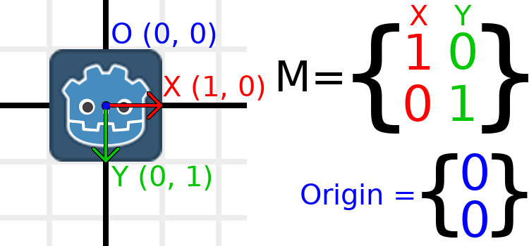
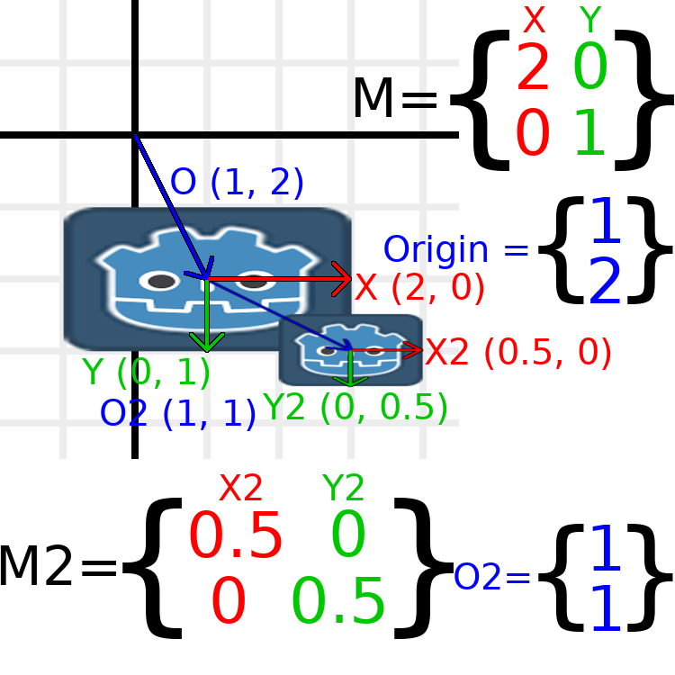

Matrices and transforms
Introduction
Before reading this tutorial, we recommend that you thoroughly read and understand the Vector math tutorial, as this tutorial requires a knowledge of vectors.
This tutorial is about transformations and how we represent them in Godot using matrices. It is not a full in-depth guide to matrices. Transformations are most of the time applied as translation, rotation, and scale, so we will focus on how to represent those with matrices.
Most of this guide focuses on 2D, using Transform2D and Vector2, but the way things work in 3D is very similar.
Note
As mentioned in the previous tutorial, it is important to remember that in Godot, the Y axis points down in 2D. This is the opposite of how most schools teach linear algebra, with the Y axis pointing up.
Note
The convention is that the X axis is red, the Y axis is green, and the Z axis is blue. This tutorial is color-coded to match these conventions, but we will also represent the origin vector with a blue color.
Matrix components and the Identity matrix
The identity matrix represents a transform with no translation, no rotation, and no scale. Let's start by looking at the identity matrix and how its components relate to how it visually appears.

Matrices have rows and columns, and a transformation matrix has specific conventions on what each does.
In the image above, we can see that the red X vector is represented by the first column of the matrix, and the green Y vector is likewise represented by the second column. A change to the columns will change these vectors. We will see how they can be manipulated in the next few examples.
You should not worry about manipulating rows directly, as we usually work with columns. However, you can think of the rows of the matrix as showing which vectors contribute to moving in a given direction.
When we refer to a value such as t.x.y, that's the Y component of
the X column vector. In other words, the bottom-left of the matrix.
Similarly, t.x.x is top-left, t.y.x is top-right, and t.y.y
is bottom-right, where t is the Transform2D.
Scaling the transformation matrix
Applying a scale is one of the easiest operations to understand. Let's start by placing the Godot logo underneath our vectors so that we can visually see the effects on an object:

Now, to scale the matrix, all we need to do is multiply each component by the scale we want. Let's scale it up by 2. 1 times 2 becomes 2, and 0 times 2 becomes 0, so we end up with this:

To do this in code, we multiply each of the vectors:
var t = Transform2D()
# Scale
t.x *= 2
t.y *= 2
transform = t # Change the node's transform to what we calculated.
Transform2D t = Transform2D.Identity;
// Scale
t.X *= 2;
t.Y *= 2;
Transform = t; // Change the node's transform to what we calculated.
If we wanted to return it to its original scale, we can multiply each component by 0.5. That's pretty much all there is to scaling a transformation matrix.
To calculate the object's scale from an existing transformation
matrix, you can use length() on each of the column vectors.
Note
In actual projects, you can use the scaled()
method to perform scaling.
Rotating the transformation matrix
We'll start the same way as earlier, with the Godot logo underneath the identity matrix:
As an example, let's say we want to rotate our Godot logo clockwise by 90 degrees. Right now the X axis points right and the Y axis points down. If we rotate these in our head, we would logically see that the new X axis should point down and the new Y axis should point left.
You can imagine that you grab both the Godot logo and its vectors, and then spin it around the center. Wherever you finish spinning, the orientation of the vectors determines what the matrix is.
We need to represent "down" and "left" in normal coordinates,
so means we'll set X to (0, 1) and Y to (-1, 0). These are
also the values of Vector2.DOWN and Vector2.LEFT.
When we do this, we get the desired result of rotating the object:

If you have trouble understanding the above, try this exercise: Cut a square of paper, draw X and Y vectors on top of it, place it on graph paper, then rotate it and note the endpoints.
To perform rotation in code, we need to be able to calculate the values programmatically. This image shows the formulas needed to calculate the transformation matrix from a rotation angle. Don't worry if this part seems complicated, I promise it's the hardest thing you need to know.

Note
Godot represents all rotations with radians, not degrees. A full turn is TAU or PI*2 radians, and a quarter turn of 90 degrees is TAU/4 or PI/2 radians. Working with TAU usually results in more readable code.
Note
Fun fact: In addition to Y being down in Godot, rotation is represented clockwise. This means that all the math and trig functions behave the same as a Y-is-up CCW system, since these differences "cancel out". You can think of rotations in both systems being "from X to Y".
In order to perform a rotation of 0.5 radians (about 28.65 degrees), we plug in a value of 0.5 to the formula above and evaluate to find what the actual values should be:

Here's how that would be done in code (attach the script to a Node2D):
var rot = 0.5 # The rotation to apply.
var t = Transform2D()
t.x.x = cos(rot)
t.y.y = cos(rot)
t.x.y = sin(rot)
t.y.x = -sin(rot)
transform = t # Change the node's transform to what we calculated.
float rot = 0.5f; // The rotation to apply.
Transform2D t = Transform2D.Identity;
t.X.X = t.Y.Y = Mathf.Cos(rot);
t.X.Y = t.Y.X = Mathf.Sin(rot);
t.Y.X *= -1;
Transform = t; // Change the node's transform to what we calculated.
To calculate the object's rotation from an existing transformation
matrix, you can use atan2(t.x.y, t.x.x), where t is the Transform2D.
Note
In actual projects, you can use the rotated()
method to perform rotations.
Basis of the transformation matrix
So far we have only been working with the x and y, vectors, which
are in charge of representing rotation, scale, and/or shearing
(advanced, covered at the end). The X and Y vectors are together
called the basis of the transformation matrix. The terms "basis"
and "basis vectors" are important to know.
You might have noticed that Transform2D actually
has three Vector2 values: x, y, and origin.
The origin value is not part of the basis, but it is part of the
transform, and we need it to represent position. From now on we'll
keep track of the origin vector in all examples. You can think of
origin as another column, but it's often better to think of it as
completely separate.
Note that in 3D, Godot has a separate Basis structure for holding the three Vector3 values of the basis, since the code can get complex and it makes sense to separate it from Transform3D (which is composed of one Basis and one extra Vector3 for the origin).
Translating the transformation matrix
Changing the origin vector is called translating the transformation matrix. Translating is basically a technical term for "moving" the object, but it explicitly does not involve any rotation.
Let's work through an example to help understand this. We will start with the identity transform like last time, except we will keep track of the origin vector this time.

If we want to move the object to a position of (1, 2), we need to set its origin vector to (1, 2):

There is also a translated_local() method, which performs a different
operation to adding or changing origin directly. The translated_local()
method will translate the object relative to its own rotation.
For example, an object rotated 90 degrees clockwise will move to
the right when translated_local() is called with Vector2.UP. To translate
relative to the global/parent frame use translated() instead.
Note
Godot's 2D uses coordinates based on pixels, so in actual projects you will want to translate by hundreds of units.
Putting it all together
We're going to apply everything we mentioned so far onto one transform. To follow along, create a project with a Sprite2D node and use the Godot logo for the texture resource.
Let's set the translation to (350, 150), rotate by -0.5 rad, and scale by 3. I've posted a screenshot, and the code to reproduce it, but I encourage you to try and reproduce the screenshot without looking at the code!

var t = Transform2D()
# Translation
t.origin = Vector2(350, 150)
# Rotation
var rot = -0.5 # The rotation to apply.
t.x.x = cos(rot)
t.y.y = cos(rot)
t.x.y = sin(rot)
t.y.x = -sin(rot)
# Scale
t.x *= 3
t.y *= 3
transform = t # Change the node's transform to what we calculated.
Transform2D t = Transform2D.Identity;
// Translation
t.Origin = new Vector2(350, 150);
// Rotation
float rot = -0.5f; // The rotation to apply.
t.X.X = t.Y.Y = Mathf.Cos(rot);
t.X.Y = t.Y.X = Mathf.Sin(rot);
t.Y.X *= -1;
// Scale
t.X *= 3;
t.Y *= 3;
Transform = t; // Change the node's transform to what we calculated.
Shearing the transformation matrix (advanced)
Note
If you are only looking for how to use transformation matrices, feel free to skip this section of the tutorial. This section explores an uncommonly used aspect of transformation matrices for the purpose of building an understanding of them.
Node2D provides a shearing property out of the box.
You may have noticed that a transform has more degrees of freedom than the combination of the above actions. The basis of a 2D transformation matrix has four total numbers in two Vector2 values, while a rotation value and a Vector2 for scale only has 3 numbers. The high-level concept for the missing degree of freedom is called shearing.
Normally, you will always have the basis vectors perpendicular to each other. However, shearing can be useful in some situations, and understanding shearing helps you understand how transforms work.
To show you visually how it will look, let's overlay a grid onto the Godot logo:

Each point on this grid is obtained by adding the basis vectors together. The bottom-right corner is X + Y, while the top-right corner is X - Y. If we change the basis vectors, the entire grid moves with it, as the grid is composed of the basis vectors. All lines on the grid that are currently parallel will remain parallel no matter what changes we make to the basis vectors.
As an example, let's set Y to (1, 1):

var t = Transform2D()
# Shear by setting Y to (1, 1)
t.y = Vector2.ONE
transform = t # Change the node's transform to what we calculated.
Transform2D t = Transform2D.Identity;
// Shear by setting Y to (1, 1)
t.Y = Vector2.One;
Transform = t; // Change the node's transform to what we calculated.
Note
You can't set the raw values of a Transform2D in the editor, so you must use code if you want to shear the object.
Due to the vectors no longer being perpendicular, the object has been sheared. The bottom-center of the grid, which is (0, 1) relative to itself, is now located at a world position of (1, 1).
The intra-object coordinates are called UV coordinates in textures, so let's borrow that terminology for here. To find the world position from a relative position, the formula is U * X + V * Y, where U and V are numbers and X and Y are the basis vectors.
The bottom-right corner of the grid, which is always at the UV position of (1, 1), is at the world position of (2, 1), which is calculated from X*1 + Y*1, which is (1, 0) + (1, 1), or (1 + 1, 0 + 1), or (2, 1). This matches up with our observation of where the bottom-right corner of the image is.
Similarly, the top-right corner of the grid, which is always at the UV position of (1, -1), is at the world position of (0, -1), which is calculated from X*1 + Y*-1, which is (1, 0) - (1, 1), or (1 - 1, 0 - 1), or (0, -1). This matches up with our observation of where the top-right corner of the image is.
Hopefully you now fully understand how a transformation matrix affects the object, and the relationship between the basis vectors and how the object's "UV" or "intra-coordinates" have their world position changed.
Note
In Godot, all transform math is done relative to the parent node. When we refer to "world position", that would be relative to the node's parent instead, if the node had a parent.
If you would like additional explanation, you should check out 3Blue1Brown's excellent video about linear transformations: https://www.youtube.com/watch?v=kYB8IZa5AuE
Practical applications of transforms
In actual projects, you will usually be working with transforms inside transforms by having multiple Node2D or Node3D nodes parented to each other.
However, it's useful to understand how to manually calculate the values we need. We will go over how you could use Transform2D or Transform3D to manually calculate transforms of nodes.
Converting positions between transforms
There are many cases where you'd want to convert a position in and out of a transform. For example, if you have a position relative to the player and would like to find the world (parent-relative) position, or if you have a world position and want to know where it is relative to the player.
We can find what a vector relative to the player would be defined in
world space as using the * operator:
# World space vector 100 units below the player.
print(transform * Vector2(0, 100))
// World space vector 100 units below the player.
GD.Print(Transform * new Vector2(0, 100));
And we can use the * operator in the opposite order to find a what world
space position would be if it was defined relative to the player:
# Where is (0, 100) relative to the player?
print(Vector2(0, 100) * transform)
// Where is (0, 100) relative to the player?
GD.Print(new Vector2(0, 100) * Transform);
Note
If you know in advance that the transform is positioned at (0, 0), you can use the "basis_xform" or "basis_xform_inv" methods instead, which skip dealing with translation.
Moving an object relative to itself
A common operation, especially in 3D games, is to move an object relative to itself. For example, in first-person shooter games, you would want the character to move forward (-Z axis) when you press W.
Since the basis vectors are the orientation relative to the parent, and the origin vector is the position relative to the parent, we can add multiples of the basis vectors to move an object relative to itself.
This code moves an object 100 units to its own right:
transform.origin += transform.x * 100
Transform2D t = Transform;
t.Origin += t.X * 100;
Transform = t;
For moving in 3D, you would need to replace "x" with "basis.x".
Note
In actual projects, you can use translate_object_local in 3D
or move_local_x and move_local_y in 2D to do this.
Applying transforms onto transforms
One of the most important things to know about transforms is how you can use several of them together. A parent node's transform affects all of its children. Let's dissect an example.
In this image, the child node has a "2" after the component names to distinguish them from the parent node. It might look a bit overwhelming with so many numbers, but remember that each number is displayed twice (next to the arrows and also in the matrices), and that almost half of the numbers are zero.

The only transformations going on here are that the parent node has been given a scale of (2, 1), the child has been given a scale of (0.5, 0.5), and both nodes have been given positions.
All child transformations are affected by the parent transformations.
The child has a scale of (0.5, 0.5), so you would expect it to be
a 1:1 ratio square, and it is, but only relative to the parent.
The child's X vector ends up being (1, 0) in world space, because
it is scaled by the parent's basis vectors.
Similarly, the child node's origin vector is set to (1, 1), but this
actually moves it (2, 1) in world space, due to the parent node's
basis vectors.
To calculate a child transform's world space transform manually, this is the code we would use:
# Set up transforms like in the image, except make positions be 100 times bigger.
var parent = Transform2D(Vector2(2, 0), Vector2(0, 1), Vector2(100, 200))
var child = Transform2D(Vector2(0.5, 0), Vector2(0, 0.5), Vector2(100, 100))
# Calculate the child's world space transform
# origin = (2, 0) * 100 + (0, 1) * 100 + (100, 200)
var origin = parent.x * child.origin.x + parent.y * child.origin.y + parent.origin
# basis_x = (2, 0) * 0.5 + (0, 1) * 0
var basis_x = parent.x * child.x.x + parent.y * child.x.y
# basis_y = (2, 0) * 0 + (0, 1) * 0.5
var basis_y = parent.x * child.y.x + parent.y * child.y.y
# Change the node's transform to what we calculated.
transform = Transform2D(basis_x, basis_y, origin)
// Set up transforms like in the image, except make positions be 100 times bigger.
Transform2D parent = new Transform2D(2, 0, 0, 1, 100, 200);
Transform2D child = new Transform2D(0.5f, 0, 0, 0.5f, 100, 100);
// Calculate the child's world space transform
// origin = (2, 0) * 100 + (0, 1) * 100 + (100, 200)
Vector2 origin = parent.X * child.Origin.X + parent.Y * child.Origin.Y + parent.Origin;
// basisX = (2, 0) * 0.5 + (0, 1) * 0 = (0.5, 0)
Vector2 basisX = parent.X * child.X.X + parent.Y * child.X.Y;
// basisY = (2, 0) * 0 + (0, 1) * 0.5 = (0.5, 0)
Vector2 basisY = parent.X * child.Y.X + parent.Y * child.Y.Y;
// Change the node's transform to what we calculated.
Transform = new Transform2D(basisX, basisY, origin);
In actual projects, we can find the world transform of the child by
applying one transform onto another using the * operator:
# Set up transforms like in the image, except make positions be 100 times bigger.
var parent = Transform2D(Vector2(2, 0), Vector2(0, 1), Vector2(100, 200))
var child = Transform2D(Vector2(0.5, 0), Vector2(0, 0.5), Vector2(100, 100))
# Change the node's transform to what would be the child's world transform.
transform = parent * child
// Set up transforms like in the image, except make positions be 100 times bigger.
Transform2D parent = new Transform2D(2, 0, 0, 1, 100, 200);
Transform2D child = new Transform2D(0.5f, 0, 0, 0.5f, 100, 100);
// Change the node's transform to what would be the child's world transform.
Transform = parent * child;
Note
When multiplying matrices, order matters! Don't mix them up.
Lastly, applying the identity transform will always do nothing.
If you would like additional explanation, you should check out 3Blue1Brown's excellent video about matrix composition: https://www.youtube.com/watch?v=XkY2DOUCWMU
Inverting a transformation matrix
The affine_inverse function returns a transform that "undoes" the
previous transform. This can be useful in some situations.
Let's take a look at a few examples.
Multiplying an inverse transform by the normal transform undoes all transformations:
var ti = transform.affine_inverse()
var t = ti * transform
# The transform is the identity transform.
Transform2D ti = Transform.AffineInverse();
Transform2D t = ti * Transform;
// The transform is the identity transform.
Transforming a position by a transform and its inverse results in the same position:
var ti = transform.affine_inverse()
position = transform * position
position = ti * position
# The position is the same as before.
Transform2D ti = Transform.AffineInverse();
Position = Transform * Position;
Position = ti * Position;
// The position is the same as before.
How does it all work in 3D?
One of the great things about transformation matrices is that they work very similarly between 2D and 3D transformations. All the code and formulas used above for 2D work the same in 3D, with 3 exceptions: the addition of a third axis, that each axis is of type Vector3, and also that Godot stores the Basis separately from the Transform3D, since the math can get complex and it makes sense to separate it.
All of the concepts for how translation, rotation, scale, and shearing work in 3D are all the same compared to 2D. To scale, we take each component and multiply it; to rotate, we change where each basis vector is pointing; to translate, we manipulate the origin; and to shear, we change the basis vectors to be non-perpendicular.

If you would like, it's a good idea to play around with transforms to get an understanding of how they work. Godot allows you to edit 3D transform matrices directly from the inspector. You can download this project which has colored lines and cubes to help visualize the Basis vectors and the origin in both 2D and 3D: https://github.com/godotengine/godot-demo-projects/tree/master/misc/matrix_transform
Note
You cannot edit Node2D's transform matrix directly in Godot 4.0's inspector. This may be changed in a future release of Godot.
If you would like additional explanation, you should check out 3Blue1Brown's excellent video about 3D linear transformations: https://www.youtube.com/watch?v=rHLEWRxRGiM
Representing rotation in 3D (advanced)
The biggest difference between 2D and 3D transformation matrices is how you represent rotation by itself without the basis vectors.
With 2D, we have an easy way (atan2) to switch between a transformation matrix and an angle. In 3D, rotation is too complex to represent as one number. There is something called Euler angles, which can represent rotations as a set of 3 numbers, however, they are limited and not very useful, except for trivial cases.
In 3D we do not typically use angles, we either use a transformation basis (used pretty much everywhere in Godot), or we use quaternions. Godot can represent quaternions using the Quaternion struct. My suggestion to you is to completely ignore how they work under-the-hood, because they are very complicated and unintuitive.
However, if you really must know how it works, here are some great resources, which you can follow in order:
https://www.youtube.com/watch?v=mvmuCPvRoWQ